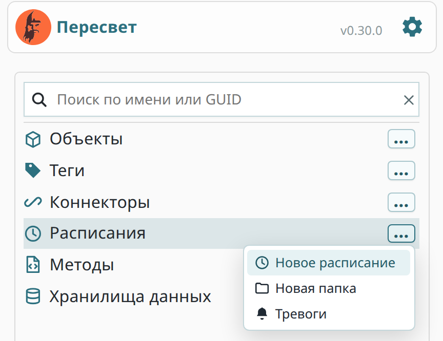
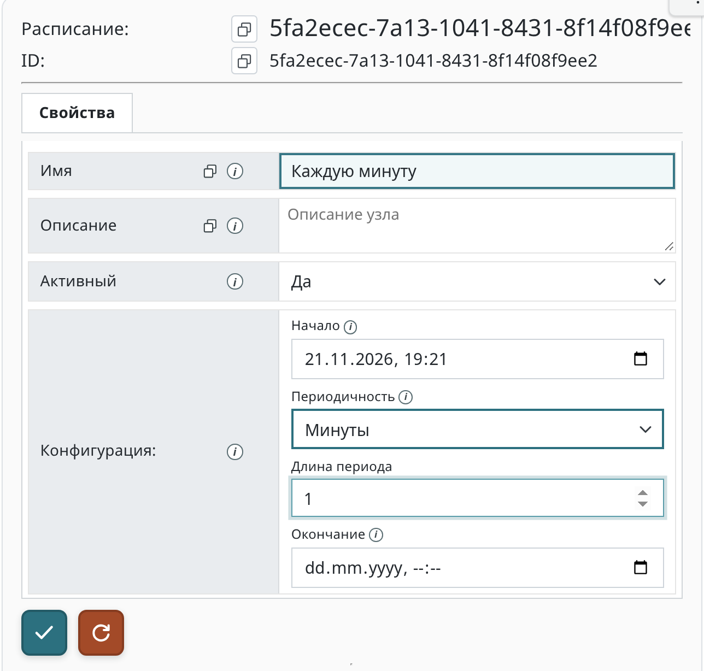
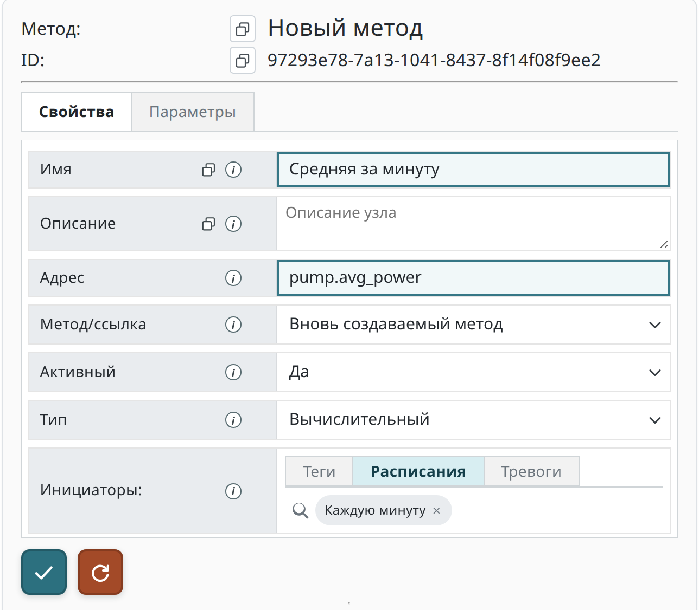
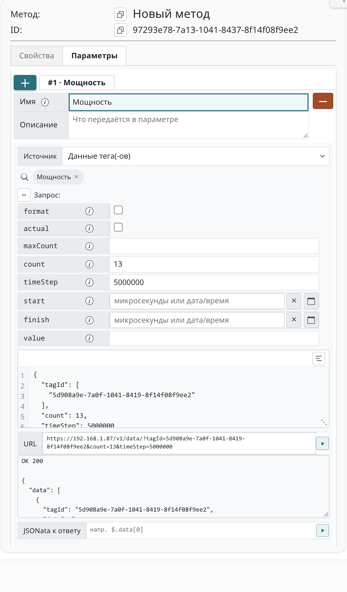
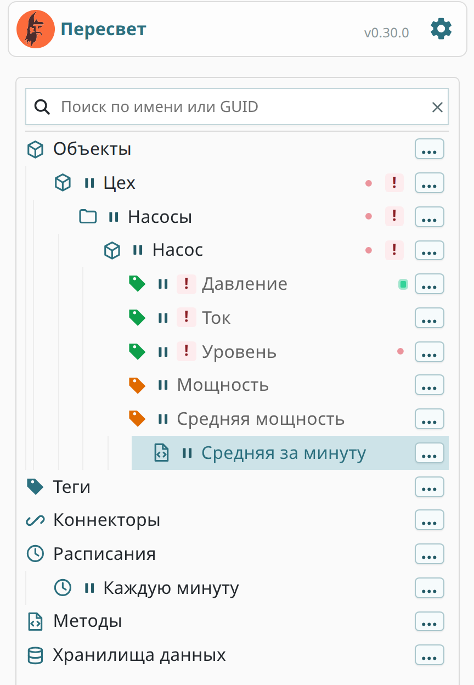
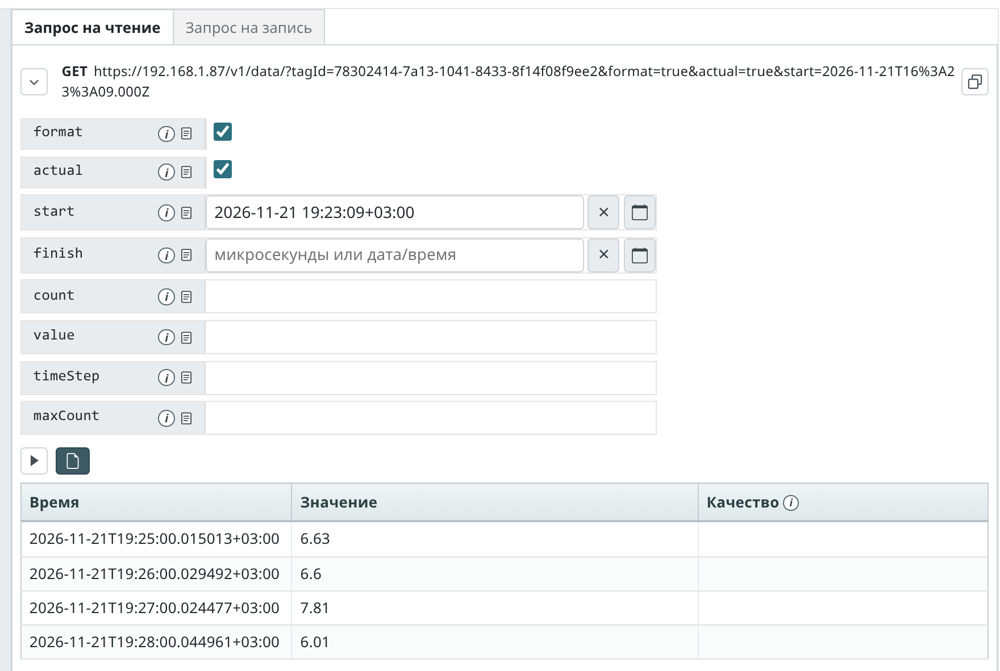
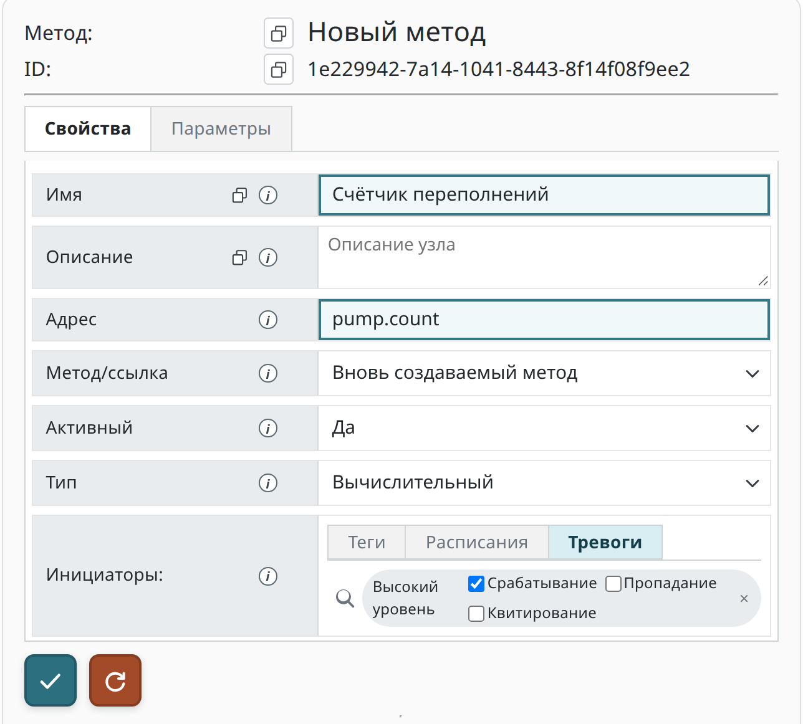
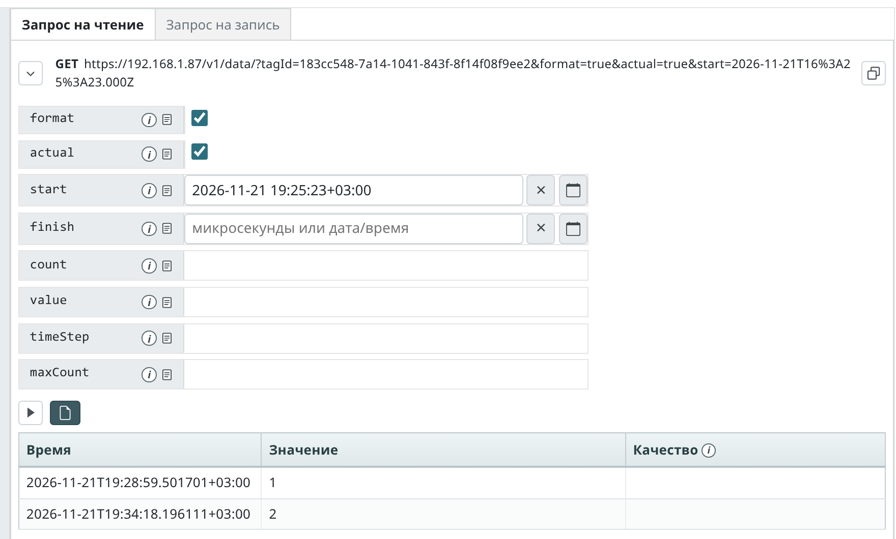

Методы по расписанию
- создавать расписание — источник событий по таймеру;
- в дополнении — запускать метод по тревоге;
- запускать метод по расписанию и передавать ему историю тега за прошедший период;
- выгружать историю тега в файл CSV.
Раз в минуту платформа вызывает метод, который считает среднюю мощность двигателя за прошедшую минуту и записывает её в тег «Средняя мощность». История этого тега выгружается в файл — получается отчёт за период.
Метод из урока 4 запускается, когда приходит новое значение тока. Но многие расчёты привязаны не к событию на объекте, а ко времени: итоги за час, сводка за смену, отчёт за сутки. Для них в модели есть расписания. Расписание ничего не считает само — оно с заданным шагом генерирует события, а методы подписываются на них так же, как на теги.
Имитатор из урока 6 должен работать: метод будет считать среднее по его данным.
Что собираем
| Что | Где | Зачем |
|---|---|---|
| Расписание «Каждую минуту» | корень «Расписания» | Раз в минуту генерирует событие |
| Тег «Средняя мощность» | объект «Насос» | Хранит среднюю мощность за каждую минуту |
Функция pump.avg_power | исполнитель worker.py | Считает среднее по ряду значений мощности |
| Метод «Средняя за минуту» | тег «Средняя мощность» | Вызывает функцию по расписанию и передаёт ей мощность за минуту |
Минута выбрана, чтобы не ждать результата долго. Как сделать то же самое раз в час, рассказано в конце урока.
Расписание
Нажмите «…» справа от корня «Расписания» и выберите Новое расписание.

В свойствах расписания задайте имя Каждую минуту, в поле «Периодичность» выберите «Минуты», «Длину периода» оставьте 1. «Начало» уже заполнено, «Окончание» оставьте пустым — расписание будет работать бессрочно. Нажмите «Записать».

События расписания приходят с шагом в одну минуту, отсчитанным от «Начала». Если «Начало» стоит на целой минуте, события приходят ровно в начале каждой минуты.
Тег и функция
Создайте у «Насоса» тег Средняя мощность с единицами кВт — так же, как «Мощность» в уроке 4.
Теперь научим исполнитель считать среднее. Остановите его в терминале клавишами Ctrl+C и перезапишите worker.py в папке ~/pump-methods командой ниже. В файле появилась вторая функция, avg_power, всё остальное прежнее:
$ cat > worker.py <<'EOF'
import asyncio
import math
import os
from patio import AsyncExecutor, Registry
from patio_rabbitmq import RabbitMQBroker
rpc = Registry(project="methods_app", auto_naming=False)
VOLTAGE = 380 # напряжение сети, В
COS_PHI = 0.85 # коэффициент мощности двигателя
@rpc("pump.power")
async def power(current):
if current is None:
return {"error": "нет значения тока"}
kw = math.sqrt(3) * VOLTAGE * current * COS_PHI / 1000
print(f"ток {current:g} А -> мощность {kw:.2f} кВт", flush=True)
return round(kw, 2)
@rpc("pump.avg_power")
async def avg_power(response):
points = response["data"][0]["data"]
values = [y for x, y, q in points if y is not None]
if not values:
return {"error": "нет значений мощности"}
avg = sum(values) / len(values)
print(f"средняя мощность {avg:.2f} кВт по {len(values)} точкам", flush=True)
return round(avg, 2)
async def main():
async with AsyncExecutor(rpc, max_workers=4) as executor:
async with RabbitMQBroker(executor, amqp_url=os.environ["amqp_url"]) as broker:
print("Исполнитель подключён к платформе", flush=True)
await broker.join()
asyncio.run(main())
EOFФункция получает ответ платформы на чтение тега — список точек [метка времени, значение, качество], отбрасывает пустые значения и возвращает их среднее. Снова запустите исполнитель:
$ .venv/bin/python worker.pyОдин исполнитель выполняет обе функции: pump.power и pump.avg_power.
Метод по расписанию
Нажмите «…» справа от тега «Средняя мощность» и выберите Новый метод. Задайте имя Средняя за минуту и адрес pump.avg_power. Тип оставьте «Вычислительный».
Инициатор на этот раз не тег, а расписание. В блоке «Инициаторы» откройте вкладку Расписания, нажмите лупу, найдите Каждую минуту и нажмите якорь ⚓. Закройте окно.

Откройте закладку Параметры и добавьте параметр кнопкой «+». Имя — Мощность, источник — «Данные тега(-ов)», лупой выберите тег «Насос → Мощность». Поиск найдёт и «Насос → Средняя мощность» — якорь нужен у первой строки. Функции нужно не одно значение, а ряд за минуту. Нажмите стрелку слева от подписи «Запрос:» — откроются ключи запроса — и заполните два из них:
timeStep—5000000: шаг между точками ряда, 5 секунд в микросекундах;count—13: число точек. 13 точек с шагом 5 секунд охватывают ровно минуту, от её начала до конца.
Нажмите стрелку справа от строки URL: пробный запрос вернёт 13 точек «Мощности» с шагом 5 секунд, последняя — на текущий момент. Выражение JSONata не нужно: функция сама разбирает ответ.

Нажмите «Записать». Значок «Средней мощности» стал оранжевым: у тега появился вычислительный метод.

Почему ряд заканчивается в момент срабатывания расписания
Как и в уроке 4, при вызове метода платформа подставляет в запрос параметра ключ finish — момент события. Для расписания это момент срабатывания. Запрос с count и timeStep возвращает count значений с шагом timeStep, последнее — на finish. Значения между записанными точками платформа вычисляет сама, поэтому шаг ряда не зависит от того, как часто писал имитатор, а простое среднее по ряду — это среднее по времени.
Проверка расчёта
Подождите минуту. В терминале исполнителя среди строк про мощность появится строка:
средняя мощность 6.29 кВт по 13 точками будет появляться раз в минуту. Дайте методу поработать несколько минут.
Отчёт за период
Откройте тег «Средняя мощность», вкладку «Хранилище» и прочитайте историю: включите флажок actual и задайте start — например, на пять минут раньше текущего времени. В таблице по одной строке на каждую минуту, с меткой времени срабатывания расписания.

Нажмите иконку с листом справа от «Читать данные» — Сохранить в CSV. Браузер сохранит файл с расширением .csv. В начале файла записаны тег и запрос, затем строка заголовка x,y,q и сами точки. Файл открывается в LibreOffice Calc или Excel — это и есть отчёт за выбранный период.
Проверка
- В корне «Расписания» есть расписание «Каждую минуту» с шагом в одну минуту.
- У «Насоса» есть тег «Средняя мощность» с оранжевым значком и методом «Средняя за минуту»: адрес
pump.avg_power, инициатор — расписание, параметр «Мощность» сcount13 иtimeStep5000000. - Исполнитель раз в минуту печатает строку со средней мощностью.
- История «Средней мощности» сохраняется в файл CSV.
ДополнениеИтоги раз в час
В настоящей системе среднюю мощность считают реже — например, раз в час. Для этого достаточно поменять три числа:
| Где | Поле | Каждую минуту | Каждый час |
|---|---|---|---|
| Расписание | Периодичность и длина периода | Минуты, 1 | Часы, 1 |
| Параметр метода | timeStep | 5000000 (5 секунд) | 300000000 (5 минут) |
| Параметр метода | count | 13 | 13 |
Код функции менять не нужно: она усредняет любой ряд. Чтобы события приходили ровно в начале часа, задайте «Начало» расписания на целый час, например 00:00.
Так же устроены итоги за смену и за сутки. А чтобы получить энергию в кВт·ч, умножьте среднюю мощность в кВт на длительность периода в часах: для часового расписания эти числа совпадают.
ДополнениеМетод по тревоге
Инициатором метода может быть и тревога. Посчитаем, сколько раз переполнялся бак: при каждом срабатывании тревоги «Высокий уровень» из урока 5 метод прибавит единицу к тегу «Переполнения».
Тег и функция
Создайте у «Насоса» тег Переполнения и выберите тип значений «Целый».
Остановите исполнитель (Ctrl+C) и откройте файл в редакторе: nano worker.py. Перед строкой async def main(): вставьте функцию:
@rpc("pump.count")
async def count(previous):
total = (previous or 0) + 1
print(f"уровень выше 90 %, переполнений: {total}", flush=True)
return totalМежду функциями оставьте по две пустые строки, как в остальном файле. Сохраните файл (Ctrl+O, Enter), выйдите из редактора (Ctrl+X) и снова запустите исполнитель. Функция получает прежнее значение счётчика и возвращает его на единицу больше. В первый раз счётчик ещё пуст, и previous равен None — тогда отсчёт начинается с нуля.
Метод
Нажмите «…» справа от тега «Переполнения» и выберите Новый метод. Имя — Счётчик переполнений, адрес — pump.count. В блоке «Инициаторы» откройте вкладку Тревоги, нажмите лупу, найдите Высокий и нажмите якорь у строки «Насос → Уровень → Высокий уровень».

У тревоги в инициаторах три флажка — события, по которым вызывается метод: Срабатывание, Пропадание и Квитирование. По умолчанию включено только срабатывание — то, что нужно счётчику.
На закладке «Параметры» добавьте параметр Счётчик: источник «Данные тега(-ов)», лупой выберите тег «Насос → Переполнения», в поле «JSONata к ответу» впишите $.data[0].data[0][1], как в уроке 4. Метод читает собственный тег: на момент срабатывания тревоги в нём лежит прежнее значение счётчика. Нажмите «Записать».
Проверка
Уровень от имитатора поднимается выше 90 % примерно раз в пять минут. Каждый раз исполнитель печатает строку:
уровень выше 90 %, переполнений: 1Прочитайте историю «Переполнений» с флажком actual: в ней по точке на каждое срабатывание тревоги.

Метки времени точек совпадают со «Стартом» срабатываний в истории тревоги (урок 5, шаг 6): при вызове метода платформа подставляет в запрос параметра момент события тревоги, и результат записывается с той же меткой.
Дальше в модели появится помещение с камерой: тег-видеопоток покажет, что происходит на станции.